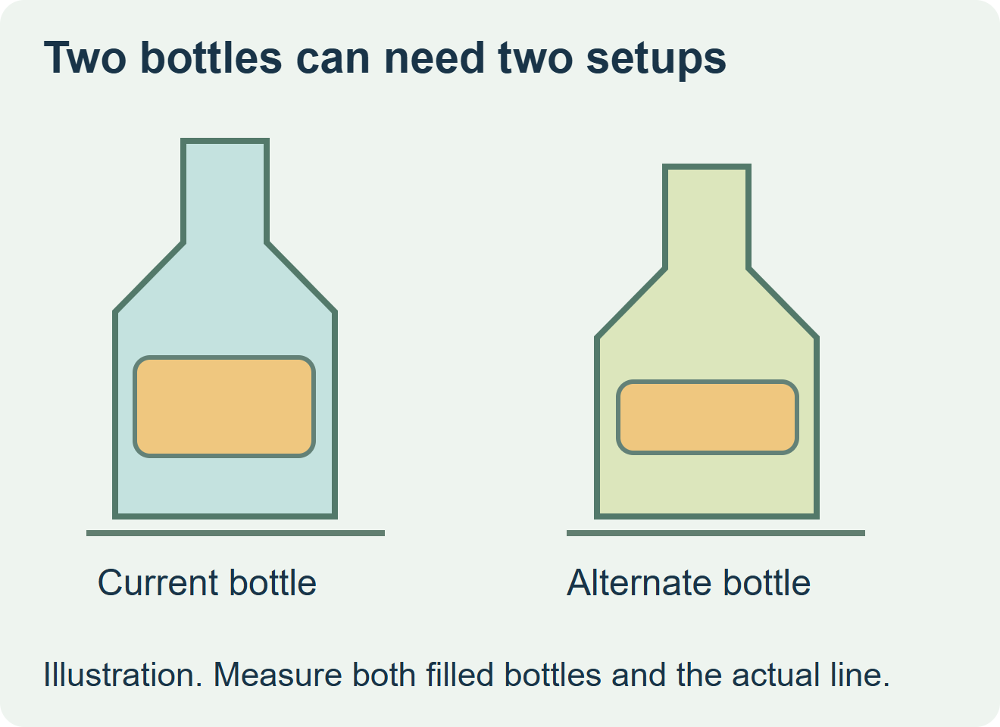
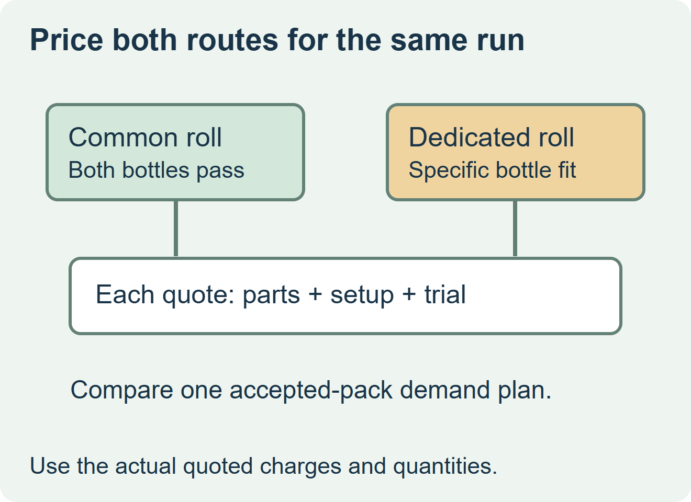

Keep the common roll if both bottles meet the approved placement and handling checks using a supported setup. Order a dedicated roll if the alternate bottle needs a different label footprint, presentation or construction. Ask for bottle-handling parts and setup in both proposals. Changing the label size does not necessarily remove the need for those parts.


Quote the handling parts separately from the label
Have the line owner identify the supported guides, infeed, supports and orientation arrangements for each bottle. Keep these items separate from the converter’s die, construction and reel specification. Krones describes handling parts matched to the existing machine. Its documentation shows why the actual equipment and container combination belongs in the quote. Krones handling parts
Mark the actual usable area on both filled samples. Record the label’s height, width, position, leading edge and any change in the approved reading face. Reuse a roll only when the installed setup can apply it within the accepted position range for each bottle. A paper cutout placed by hand can check approximate geometry before the line trial.
| Proposal | Add to the comparison | Evidence required |
|---|---|---|
| Alternate bottle with existing roll | Any equipment parts, setup, trial and usable old stock | Finished samples of both bottles with the same roll and identified setups. |
| Alternate bottle with dedicated roll | Changed label tooling, accepted label order and any equipment parts still needed | A marked roll drawing, supported line setup and accepted finished packs. |
| Stay with current approved bottle | Quoted bottle availability, usable stock and pack schedule | Current purchase and line conditions as the comparison baseline. |


Compare the cost of finished packs over the same run plan
Ask each supplier or co-packer for its actual one-time charges, expected number of changeovers, how changeovers are charged and whether the available labels match the finish and artwork in scope. Separate labels already purchased from additional labels to be ordered. A shared roll has value when the leftover pieces are approved for the planned work. Count that stock once.
In a hypothetical sparkling-water run, an alternate bottle has a shorter body panel but uses a different guide setting. A smaller label clears the shoulder. Its quote still needs the setup for the alternate bottle. Compare that route against a paper fit and line trial of the existing label, or keep the current bottle if the package and setup comparison remains open. Use real quantities and charges when making the choice.
Lock the bottle and roll pairing
Keep the bottle item references, accepted placements, roll drawings, parts or settings and pack trial together. If the converter and co-packer quote different parts of the job, give them the same revision and demand plan. Confirm sample scope before buying production quantity.
Discuss the unresolved label requirement
Send both bottle item drawings and filled samples, the current label and roll drawing, line model and changed parts or setup, change frequency and required quantities. Review beverage label options and prepare a label specification inquiry. The contact page opens an email draft and lists email or WhatsApp for attachments. Supply, proof options, testing, pricing and timing require project confirmation.